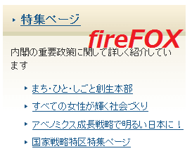
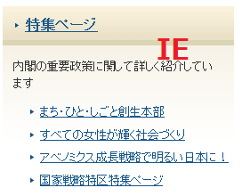
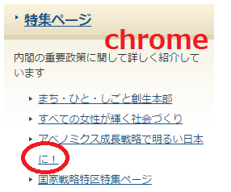

chromeでの表示が違うのはフォントが原因
最近、firefoxとchrome、ieでサイトの表示が違ってしまうようなのですが、これはchrome「42」のバージョンから、デフォルトでのフォントが「メイリオ」に変わっているのが原因と思われます。
例えば、こちらは首相官邸のサイドバーの部分になりますが、私の環境ではchromeだけ表示が違ってしまっています。
■firefox

■ie

■chrome

chromeだけ横長に表示されてしまい、２行になってしまうのです。自サイト内でも複数のサイトで上記のような崩れが生じています。
これは chrome「42」のバージョンから、特定の環境下でのデフォルトのフォントが「MS Pゴシック」から「メイリオ」に変わっているのが原因です。
フォントには固定幅の「等幅フォント」と「プロポーショナルフォント」があり、例えば、「・」でも１文字分をきっちり取る等幅フォントと狭い文字については詰めて表示するプロポーショナルフォントの違いがあります。
このうち、「メイリオ」は固定幅の等幅フォントに該当するため、プロポーショナルフォントで表示されるブラウザと比較すると、細長い狭い文字でも１文字分の横幅を取る形になってしまい、その影響で横長に表示されてしまいます。
chromeも、以前までは「MS Pゴシック」だったようで、この「P」はプロポーショナルのPの意味ですが、これまでは細長い文字については詰めて表示していたものと思います。けれども、「42」のバージョンからは、きっちり１文字分をとるようになったため、横長に表示されてしまい、崩れが生じてしまうのだろうと思います。
この対処方法としては、メイリオ以外のフォントをCSSで指定すればいいだけですが、具体的に何を指定するかについては、運営者の好みによると思われます。
当サイトでは「MS Pゴシック」あたりがぶなんかなと思っているのですが、逆にメイリオで統一してもよい気がします。ウィキペディアによると「メイリオ」の語源は「明瞭」から来ているようで、実は日本になじみ深いフォントだったようなので、そっちでもいいんじゃないかなという気もします。
いずれにしても、何等かのフォントをCSSで指定しなくてはいけなくなったので、何も指定していない場合はcssにてfont-familyを追加されるとよいでしょう。